In 1642 Abel Tasman anchored two ships near Wainui in Golden Bay and lost four men in skirmishes with the local people after which he departed. He is commemorated by having New Zealand's smallest national park named after him. We took a boat trip north from Marahau when we saw a family of Fur Seals and the fairly rare Black Oystercatcher (Haematopus unicolor) after which we had a beautiful four-hour trek back through the park.
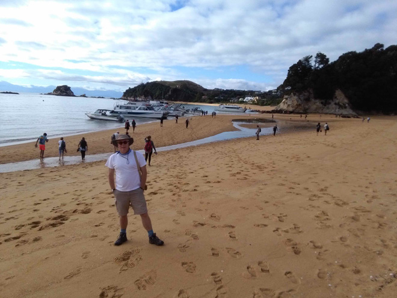
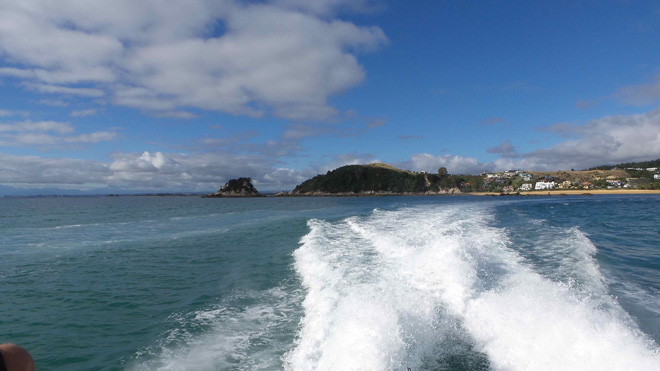
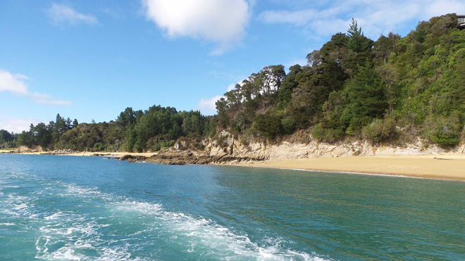
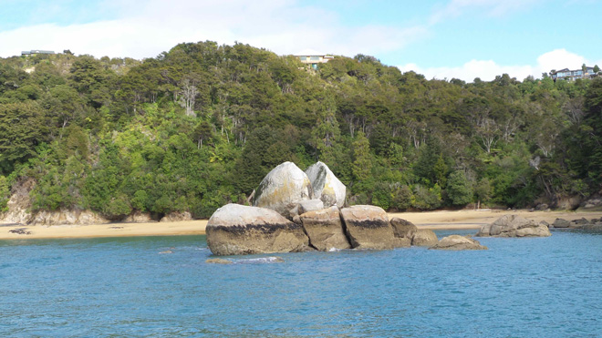
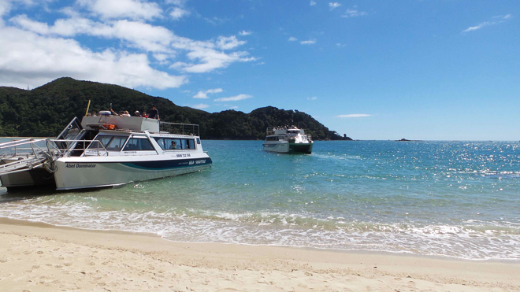
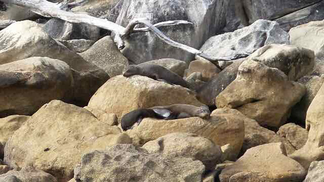
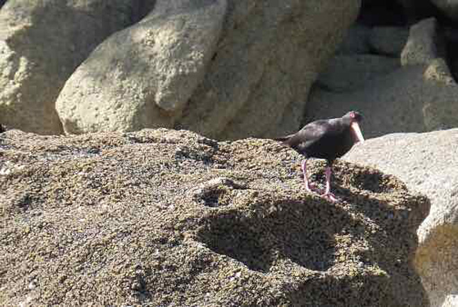
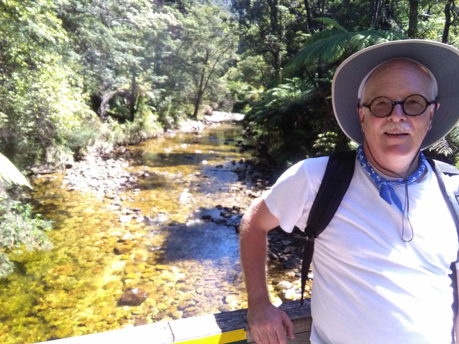
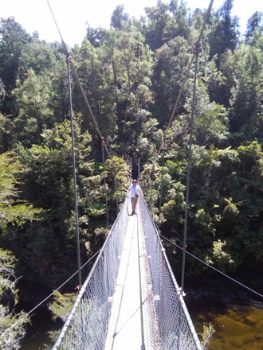
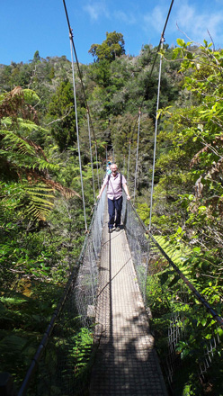
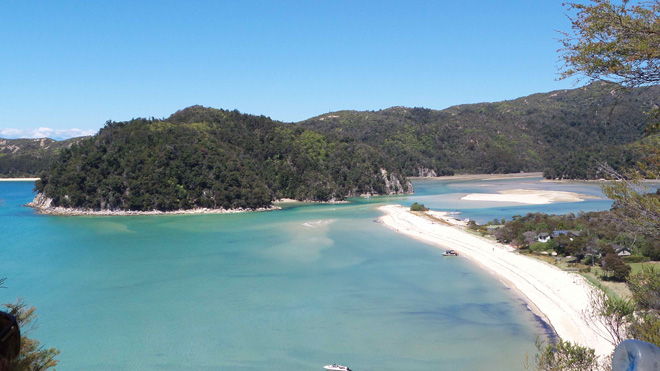
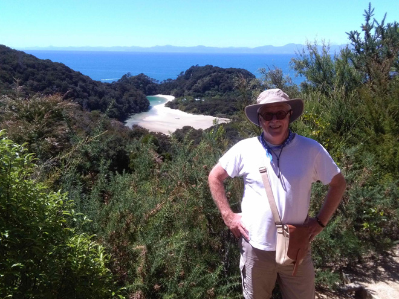
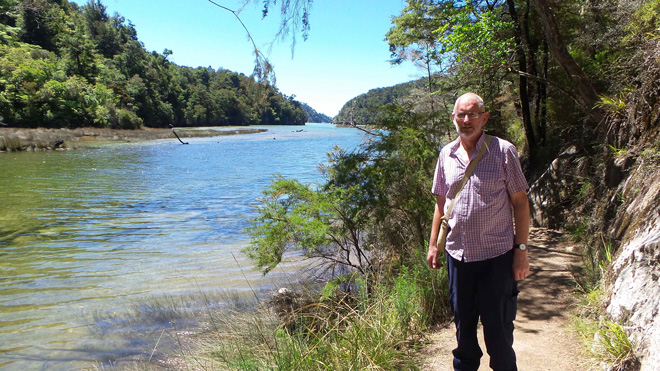
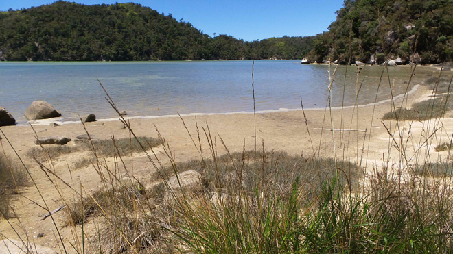
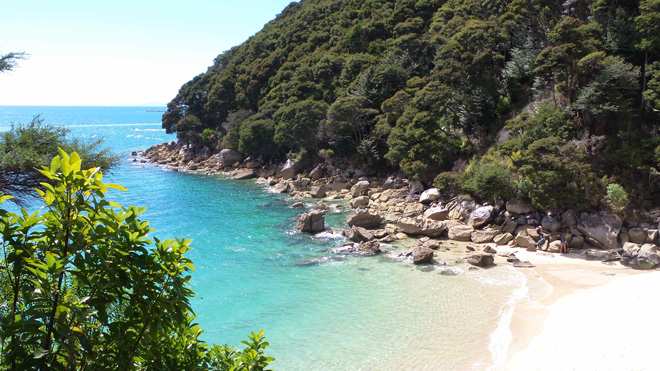
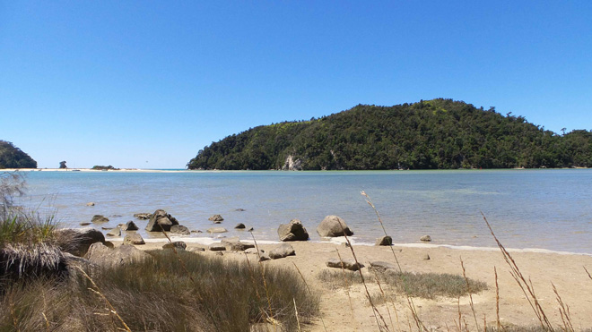
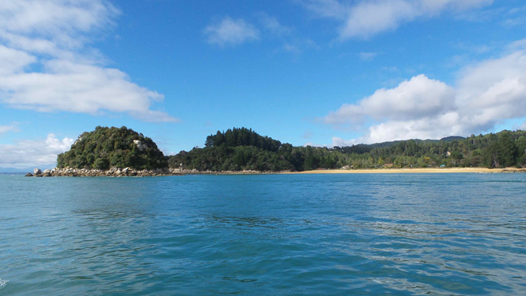
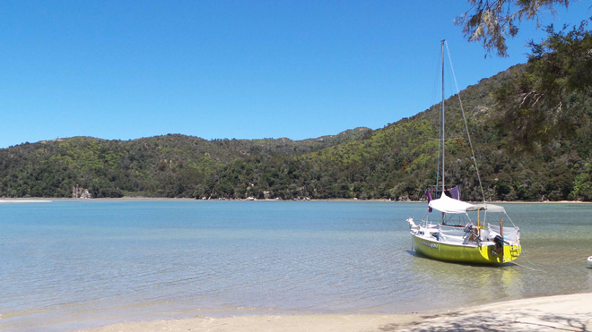
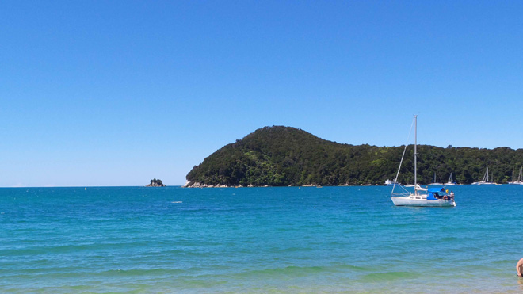
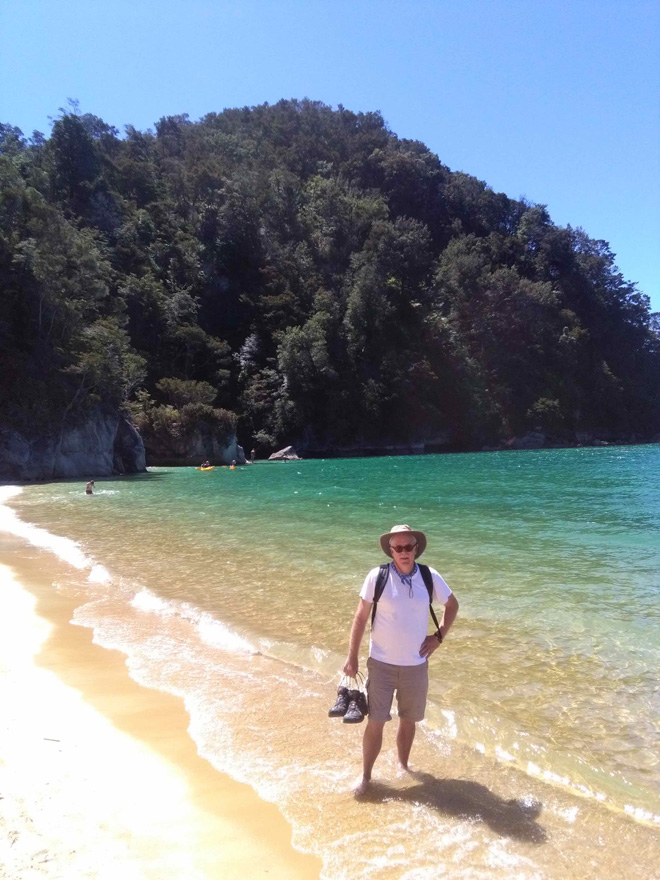
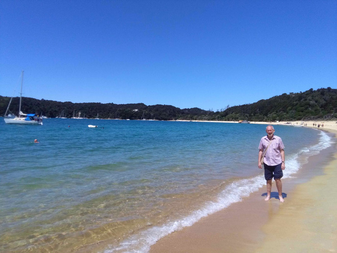
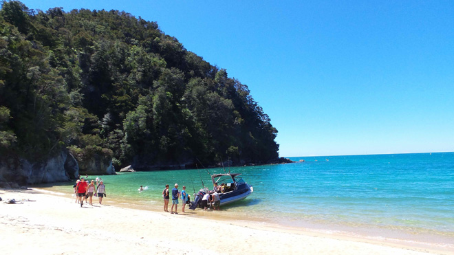